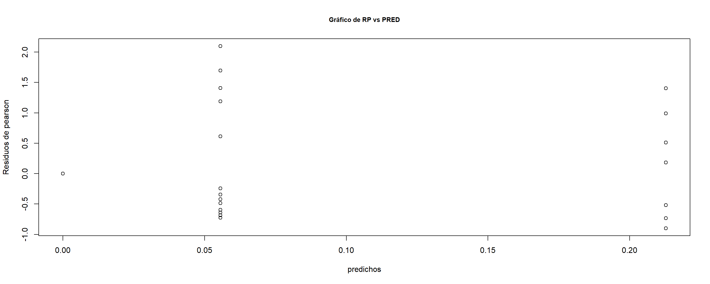
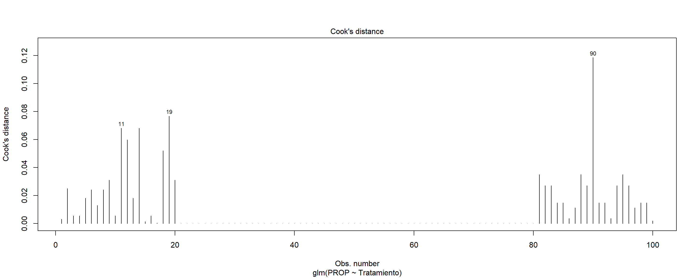
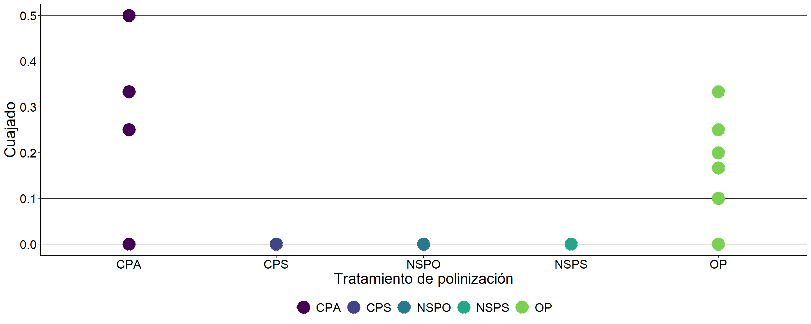

The objective of this essay was to study the pollination regime of the species.
Pollination studies were carried out on floral buds that had not begun anthesis yet. In the natural self-pollinated (NSPO) treatment, branches with only one bud were isolated with paper bags , in natural self-pollinated (NSPS) branches with several buds were isolated with paper bags to check auto compatibility, while in the open pollination (OP) treatment branches were only identified. In the cross-pollinated (CPA) trial, buds were emasculated and then pollinated manually with pollen from another genotype and in cross pollinated (CPS) the buds were emasculated and then pollinated manually with pollen from anothers flowers on the same genotype. These branches were also covered with paper bags to avoid the entrance of unknown pollen. Twenty repetitions of each treatment were performed in random branches. Finally, thirty days later fruit set was verified.

## [1] 0.337784426##
## Call:
## glm(formula = PROP ~ Tratamiento, family = "quasibinomial", data = polin,
## weights = TOTAL)
##
## Coefficients:
## Estimate Std. Error t value Pr(>|t|)
## (Intercept) -1.308333 0.207142 -6.31612 0.0000000085844 ***
## TratamientoCPS -20.575487 3148.861919 -0.00653 0.99480
## TratamientoNSPO -20.257736 3799.004878 -0.00533 0.99576
## TratamientoNSPS -21.366645 2656.260476 -0.00804 0.99360
## TratamientoOP -1.524881 0.320182 -4.76254 0.0000068477041 ***
## ---
## Signif. codes: 0 '***' 0.001 '**' 0.01 '*' 0.05 '.' 0.1 ' ' 1
##
## (Dispersion parameter for quasibinomial family taken to be 0.337784426)
##
## Null deviance: 67.66800 on 99 degrees of freedom
## Residual deviance: 33.72519 on 95 degrees of freedom
## AIC: NA
##
## Number of Fisher Scoring iterations: 20## Analysis of Deviance Table (Type II tests)
##
## Response: PROP
## LR Chisq Df Pr(>Chisq)
## Tratamiento 100.4866 4 < 0.000000000000000222 ***
## ---
## Signif. codes: 0 '***' 0.001 '**' 0.01 '*' 0.05 '.' 0.1 ' ' 1## Single term deletions
##
## Model:
## PROP ~ Tratamiento
## Df Deviance scaled dev. Pr(>Chi)
## <none> 33.72519
## Tratamiento 4 67.66800 100.4866 < 0.000000000000000222 ***
## ---
## Signif. codes: 0 '***' 0.001 '**' 0.01 '*' 0.05 '.' 0.1 ' ' 1## Single term deletions
##
## Model:
## PROP ~ Tratamiento
## Df Deviance scaled dev. Pr(>Chi)
## <none> 33.72519
## Tratamiento 4 67.66800 100.4866 < 0.000000000000000222 ***
## ---
## Signif. codes: 0 '***' 0.001 '**' 0.01 '*' 0.05 '.' 0.1 ' ' 1## $emmeans
## Tratamiento prob SE df asymp.LCL asymp.UCL
## CPA 0.2127659574 0.0346955588 Inf 0.1526037900 0.288569407
## CPS 0.0000000003 0.0000009866 Inf 0.0000000000 1.000000000
## NSPO 0.0000000004 0.0000016355 Inf 0.0000000000 1.000000000
## NSPS 0.0000000001 0.0000003773 Inf 0.0000000000 1.000000000
## OP 0.0555555556 0.0128103174 Inf 0.0351707041 0.086693790
##
## Confidence level used: 0.95
## Intervals are back-transformed from the logit scale
##
## $contrasts
## contrast odds.ratio SE df null z.ratio p.value
## CPA / CPS 862621658 2716276490779 Inf 1 0.007 1.0000
## CPA / NSPO 627802198 2385023611543 Inf 1 0.005 1.0000
## CPA / NSPS 1902900753 5054600060808 Inf 1 0.008 1.0000
## CPA / OP 5 1 Inf 1 4.763 <.0001
## CPS / NSPO 1 3591 Inf 1 0.000 1.0000
## CPS / NSPS 2 9088 Inf 1 0.000 1.0000
## CPS / OP 0 0 Inf 1 -0.006 1.0000
## NSPO / NSPS 3 14051 Inf 1 0.000 1.0000
## NSPO / OP 0 0 Inf 1 -0.005 1.0000
## NSPS / OP 0 0 Inf 1 -0.007 1.0000
##
## P value adjustment: tukey method for comparing a family of 5 estimates
## Tests are performed on the log odds ratio scalePlot 1

Plot 2
Only treatments open pollination [OP] (5.56%) and artificial cross-pollinated [CPA] (21.28%) presented fruit set. Therefore the species is self-incompatible.